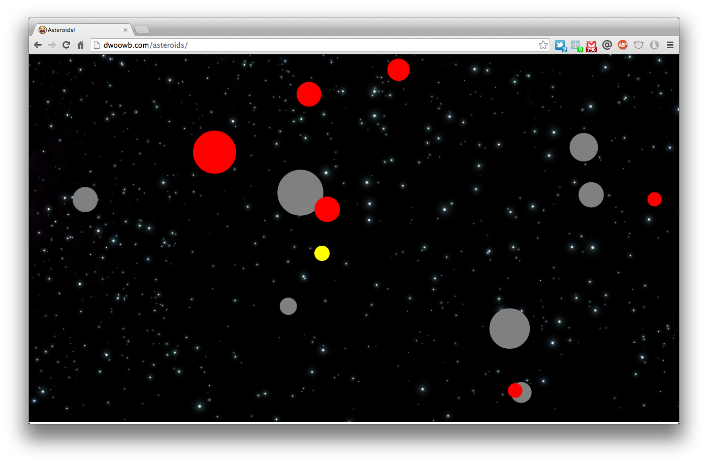

Hi my name is Daniel, and you are . . . ?
Daniel Woo
- Github | LinkedIn | Home
-
Tel:
(818)-970-8112 -
Email:
dwoo92@gmail.com -
Add:
1061 Market St. #4,
San Francisco, CA 94103
NYU Leonard N. Stern School of Business '14
B.S. Finance, Entrepreneurship
SAT: 2310
Projects
SoundClone
2014
Ruby on Rails, Backbone.js
Source | Deployed
- Rebuilt major SoundCloud functionality, Single-page Backbone app, consuming a RESTful Rails API.
- Implements custom parse method for models with complex associations.
- Composite views used to rerender only necessary subviews, in response to user action.
- Custom styled player using SoundManager2 API.
Experience
Plan C Agency
Los Angeles Summer 2012
Production Assistant
- Booth design and event creation for Verizon Wireless Dragon Boat Festival garnered high number of impressions.
- Proofed copy for Gilead print ad, checking formatting and content.
- Mapped out specifications with lead designer for Verizon's APAHM tour campaign.
Sonder
NYC Jan-Jun 2013
Team Lead
- Worked in a team of four to validate a real-time, location based platform for NYU students to create and join interest-based events.
- Designed wireframes for a working iPhone demo through POP.
- Created pitch deck and presented to FirstMark Capital at NYU Stern.
Technologies
Ruby, SQL, Ruby on Rails, HTML, CSS
JavaScript, Backbone.js, jQuery, Git, RSpec
Other Interests
Graphic Design, Typography
UX/UI, 3D Design, Craft
Projects
-
Rebuilt core SoundCloud functionality, Single-page Backbone app, consuming a RESTful Rails API.
- Intelligently bootstraps data to minimize server requests
- Builds nested JSON structures using JBuilder
- Implements custom parse method
- Hand built CompositeView, extension of Backbone.View
- All views are hand styled
- Custom styled player, using SoundManager2 API
-

ActiveRecord Lite, an exercise in metaprogramming
- Mass Assignment
- Querying
- Associations
-

Classic arcade game built with JavaScript and HTML5 Canvas
- Implements custom "inherits" method
- Ship, asteroids, and bullets inherit from MovingObject class.
-
Chess

In terminal chess for two people, built with Ruby
- Follows OOP principles, modularizing pieces under SlidingPiece and SteppingPiece
- Allows players to save and resume games using YAML
- Uses 'colorize' gem to build the board, and unicode characters for pieces